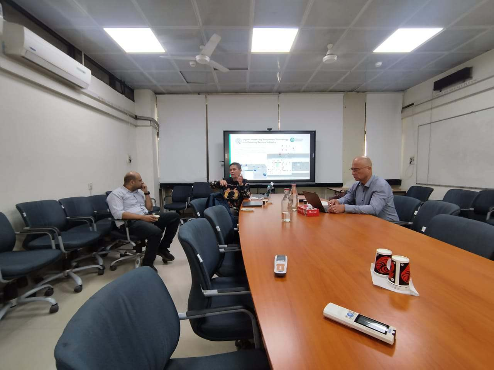
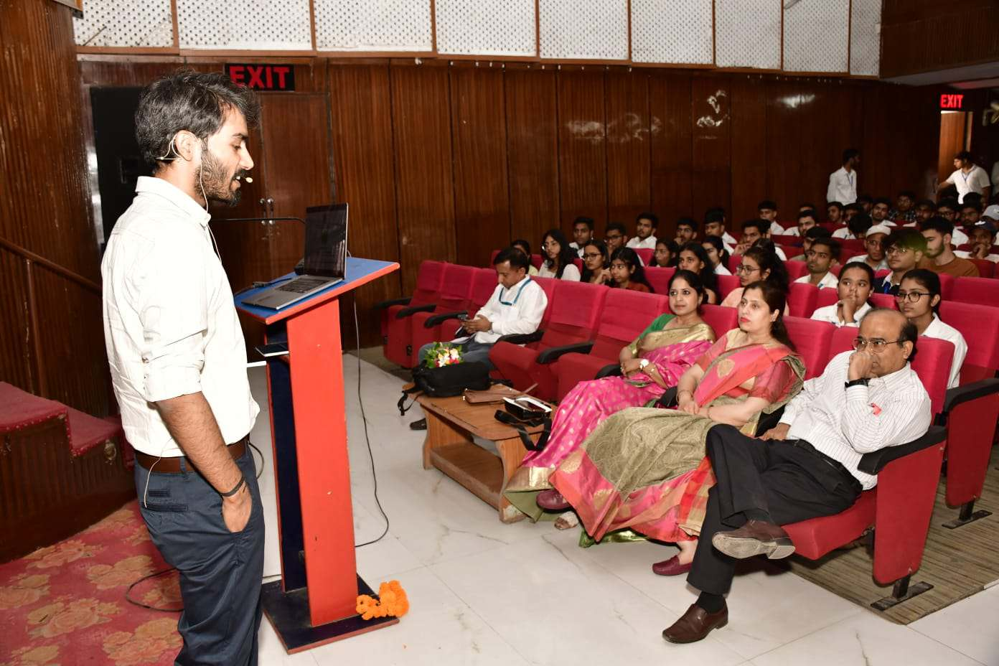
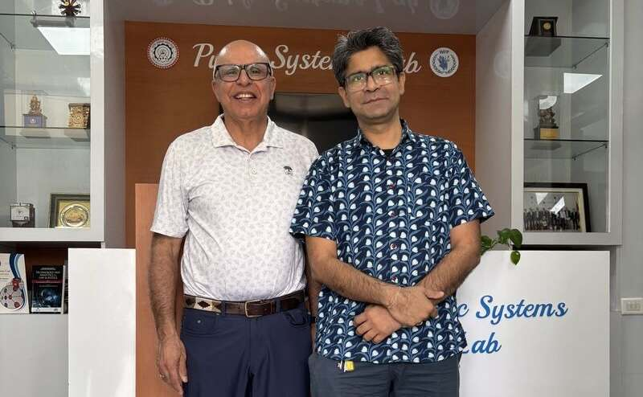
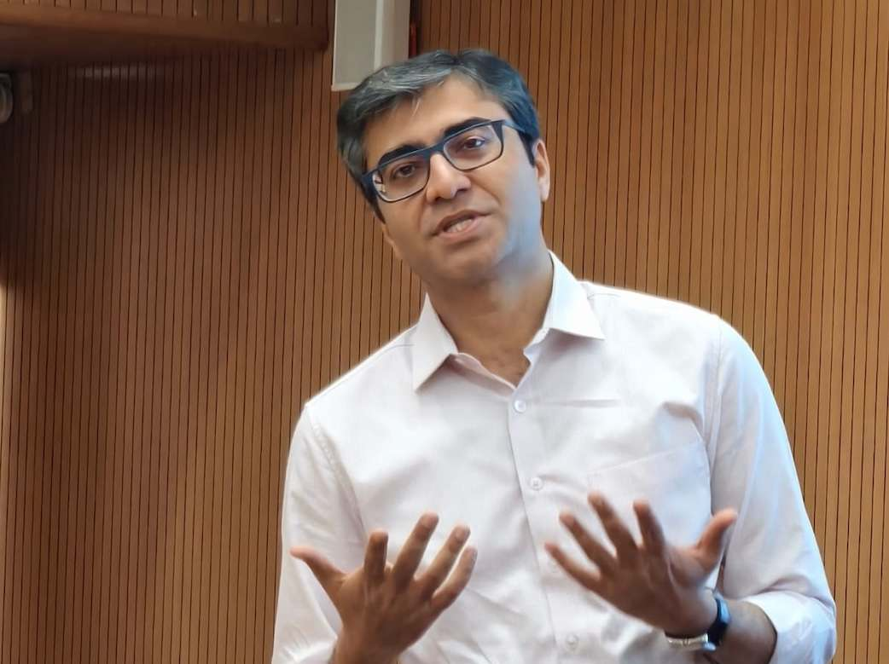

Dr. Ankur Garg joins IIT Delhi as Adjunct Professor
Read more
Prof. Navonil Mustafee presented his lecture on Hybrid Modelling and Simulation for Transdisciplinary Science
Read moreIEOR Group welcomes new batch of M.Tech and Ph.D students
Read more
Seminar on “Routing in the Real-World” by Dr. Abhishek Roy at IIT Delhi
Read more

Prof. Amber Srivastava delivers seminar on Artificial Intelligence in Engineering systems at TITS, Bhiwani
Read morePast News

"Seminar on AI-Driven Fraud Detection in Asian Health Insurance "by Mr. Sankara Prasad Kondareddy at IIT Delhi
Read more

Seminar on “UAV Search and Routing Planning in a Disaster Area” by Dr. Rajan Batta at IIT Delhi
Read more

Dr. Ankur Garg presented his lecture on "Scheduling Models and Heuristics in the Airline Industry"
Read more